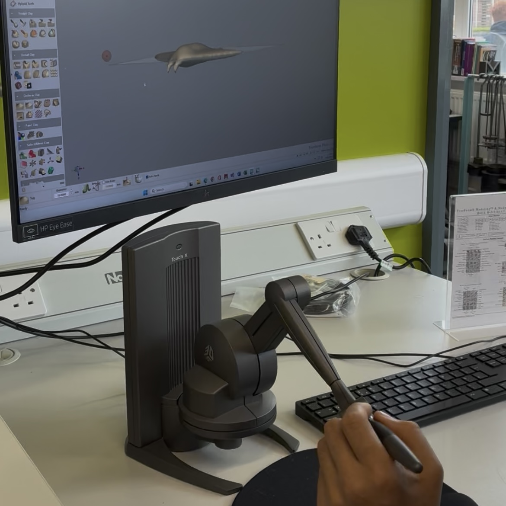
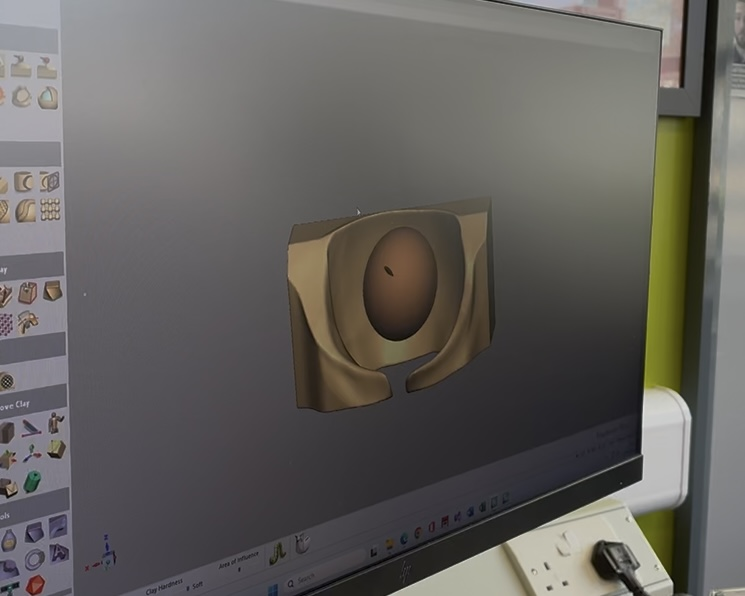

Haptic Sculpting
Sculpting with Haptic Pen
Before the fish skin texture was obtained through the high-resolution STL file generated via 3D scanning, the initial plan for the manta ray's outer covering was to sculpt the entire surface manually using a haptic pen.
The haptic sculpting process began with the design of the manta ray’s head, referencing similar anatomical models. Unlike the CAD-based version, which appeared sharp and geometrically rigid, the haptic pen enabled a more organic and fluid shaping process, allowing the designer to smooth and refine the contours of the head to achieve a more natural form.
Following this, attention was directed toward the manta ray’s wings. While the basic wing structure had already been developed in CAD, the application of realistic surface texture was carried out using the haptic sculpting tools. The texture extracted from the scanned STL file was first converted into a 2D image format. This image was then used to create a negative mold pattern, which was applied to the wings to engrave the texture accurately. The haptic pen was further used to blend and refine the edges of the texture, ensuring a seamless integration with the overall wing surface. This process allowed for both structural realism and aesthetic detailing, significantly enhancing the biomimetic quality of the final prototype.